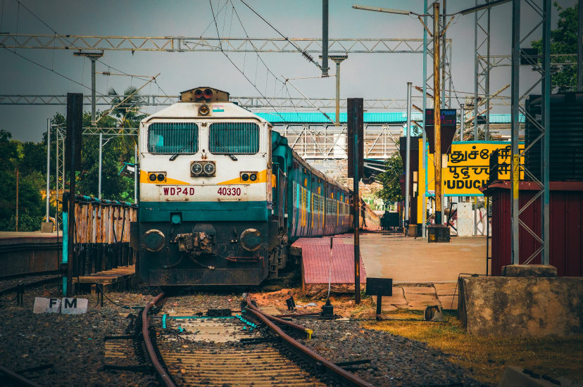
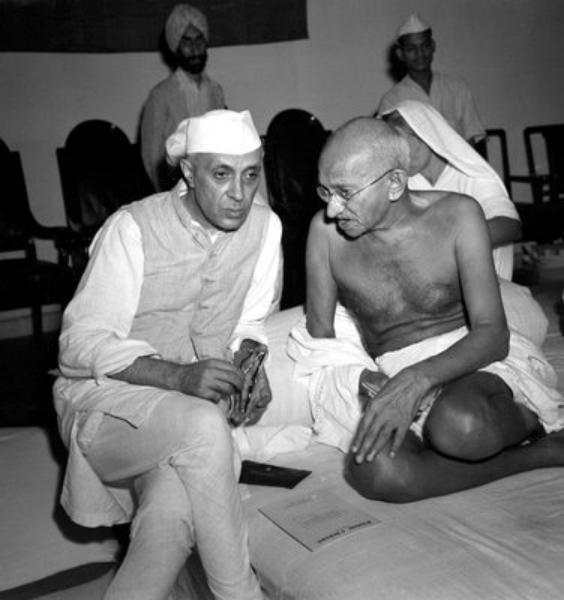
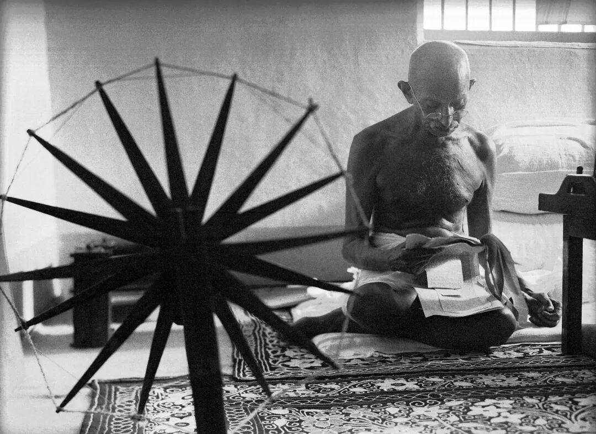
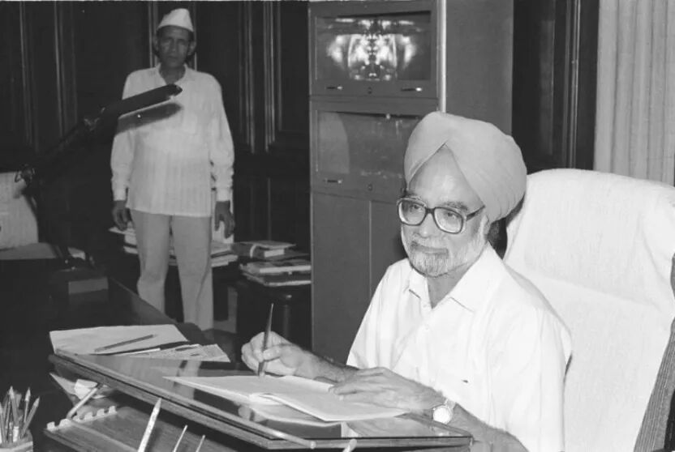
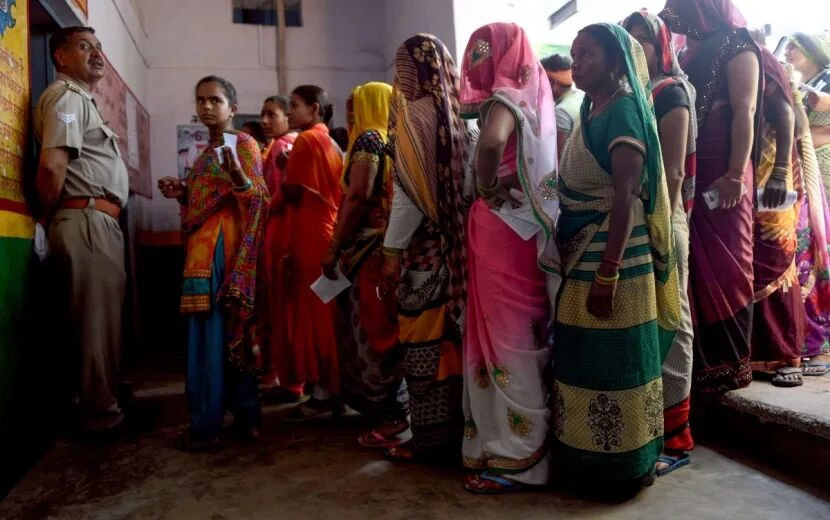
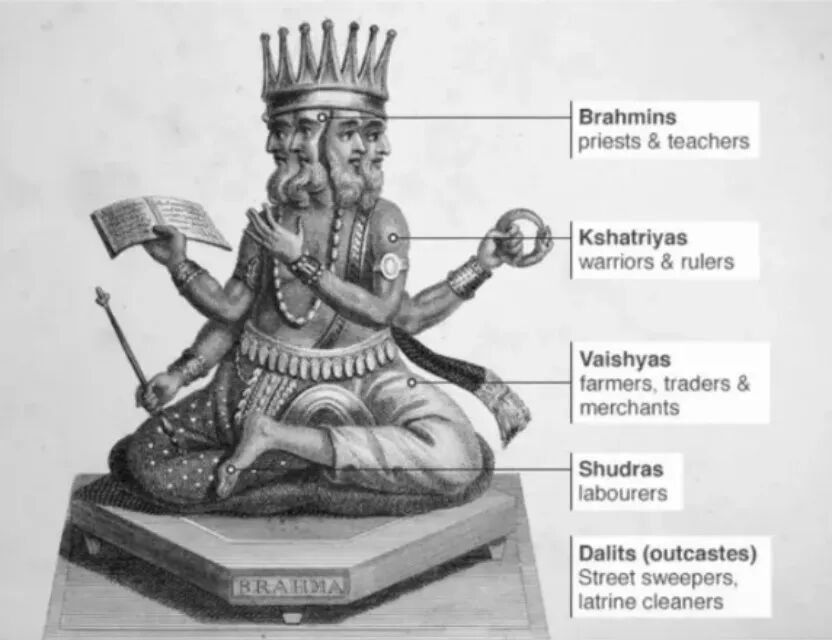

这是21世纪初平凡的一天：印度北方邦首府勒克瑙(Lucknow)的火车站台上人头攒动：装满谷物的麻袋堆在地上，由平原上枯瘦的农民送到城里大腹便便的买主那里；小贩在出售玩具、鸡蛋、腰带；一个赤脚的女人用手指拨弄着手机。人们蹲着，静静地等待着列车进站，离情与迷惘交织、兴奋与恐惧共融的情绪在空气中弥漫——这里的人们即将花6美元坐上三等座，登上普斯帕克列车(Pushpak Express)，这趟列车从贫困的印度北部腹地出发，驶出恒河平原，经过坎普尔、博帕尔和埃德瓦进入酒乡纳西克，在24小时后，便会到达富裕的海滨城市孟买。

▲
印度火车
“孟买是我们梦想的地方。”列车上的乘客迪帕克如是说。和大多数人一样，他正准备逃离农村中家族力量的约束和种姓制度的藩篱，进入孟买脆弱的下层社会，做出租车司机、擦鞋工人或小店的外卖员。迪帕克的选择昭示着印度生活重组的基本模式：从农村到城市，从大家族到小家庭，从乡村的安于现状到城市里熊熊燃烧的欲望，现代印度的轮廓在无数印度人重塑自我的过程中逐渐清晰起来。
普斯帕克列车上的人们或许正为他们国家经济的起飞而感叹——印度实在是一个神奇的国度，这个年轻的国家在独立之初的前三十年深陷经济增长的泥潭，数以亿计的人口在极度贫困中挣扎，却沉湎于绵延千年的宗教信仰，听之任之地接受命运的安排。但似乎在一夜之间，印度的改革给这个国家贴上了崭新的标签：一个摆脱了束缚的国家、一头惊醒的大象、一个改变世界的民主模式、一个全球经济的主要参与者——印度的光荣与梦想尽数迸发，他们正竭力将印度的过去与现在分离开来。
但列车上的人们大概也不会预料到，他们的国家会在未来的十余年继续保持高速的经济增长。2024年5月，印度政府公布上一年度的经济数据，显示印度经济录得高于此前预期的8.2%的增长，领跑全球；总理莫迪承诺在其第三个任期内印度将成为世界第三大经济强国——这一切都在当时人们的意料之外，因为在他们看来，糟糕的基础设施和臃肿的官僚机构滋生的低效与腐败挥之不去，被官方废除的种姓制度仍以社会习俗为依托阴魂不散，而增长的成果并未得到共享，社会不平等日益严重，以上种种直至今日都依然是印度经济发展难以摆脱的顽疾与沉疴，印度的现代化之路远非一马平川。
荣光与阴影都是现代印度崛起的不同侧面，一如即将前往孟买打拼的人们：他们渴望在大城市的新世界里大步向前，却又很难不被来自乡村旧世界的规则与传统所累——印度的现代化之路，是莲花与刺的共舞。
尼赫鲁、甘地与印度式增长陷阱
如果我们将回溯历史的视角放得更长远些，就会发现印度并非一直是全球经济中的后发追赶者，据国际货币基金组织(IMF)估计，18世纪前，莫卧儿王朝统治下的印度经济体量约占全球经济总量的近1/3，与中国相当。南亚次大陆以喜马拉雅山脉与北部的寒流相隔，湿润的西南季风带来丰沛的降水，也带来了英国的商船与殖民。至1947年独立时，印度经济已然归零——在新政府面前的，是一个民族与宗教上充满矛盾与撕裂，经济上单一而赤贫的国家。
印度独立后的前三十年经济增速的确优于殖民地时期的表现，但却在全球竞争中落后，在这一期间，印度以大约每年3.5%的增长率保持低速增长，而同期印度人口的年增长率超过2%，这意味着极其缓慢的人均收入增长。这种低增长率是印度过于抗拒变革的后果，因此后来又被称为“印度式经济增长率”(Hindu rate of growth)。让这一说法流传开来的，是德里经济学院教授、著名的规划师拉杰·克里希纳(Raj Krishna)。他曾不无戏谑地说，应该在经文的某个地方写上，这片土地上的人民注定永远都看不到年均经济增速超过3.5%。
这一时期印度经济表现不佳的原因与其经济政策的扭曲有重大关系：独立后印度成为世俗化的民主社会，但在经济发展模式上却选择了苏联式的计划经济。现代印度政策中存在的一些模棱两可的部分，其根源可以追溯到两位印度历史上杰出人物的观点差异——圣雄甘地(Mahatma Gandhi)和印度首任总理贾瓦哈拉尔·尼赫鲁(Jawaharlal Nehru)——他们的理念共同塑造了印度现代经济，两人的政策观点有些是一致的，但大多数对立。而由于甘地和尼赫鲁圣人般的地位，印度人从来都难以正视这些差异的存在。

▲
尼赫鲁与甘地
两人经济理念的差异在印度独立前就已初露端倪。尼赫鲁曾就读于哈罗公学和剑桥大学，对印度穷苦民众的同情使他坚信费边社会主义，这一思潮主张以渐进而非革命的方式实现社会主义，并倡导简单生活。而甘地则提倡基层斗争，尝试与过去不同的生活方式，崇尚自然哲学。早年的尼赫鲁曾是一名热情的社会主义者，他在1933年的日记中写道：“我无法理解（甘地）为何能接受……现行的社会秩序，（以及）他为何能忍受身边尽是……既有社会秩序的受益者。”尽管俄国共产主义运动的兴起使作为民主派的尼赫鲁抛弃了这一信念，但总体而言他要比甘地更加激进。
相比来自高种姓贵族家庭的尼赫鲁，一生清贫的甘地却并不相信任何社会主义流派，但他仍以宽容和理解的态度看待自己和尼赫鲁之间的观点差异，尼赫鲁也很欣赏甘地的淳朴、敏锐、智慧以及杰出的政治天赋，更钦佩他的世俗主义和普世大爱。两人都是印度独立运动杰出的领袖，但他们在各自的蓝图中为印度制定的经济政策截然不同：尼赫鲁虽然在印度独立前已放弃马列主义甚至社会主义的信念，但依旧执着于开展大型规划、重工业、现代科学和技术；甘地则提出印度应当建立小规模、自给自足、实行民主制的村庄，人们应当过着简朴而崇尚自然的生活——尼赫鲁认为这完全不符合实际。

▲
甘地主张“村庄共和”（village swaraj）
这两种理念是否兼容仍然是一个疑问，将印度遵循的社会主义形式描述为国家资本主义也许更加合适：一些大型公共部门公司和银行得以建立，同时也有很多私营公司和企业，其规模呈两极分化之势，要么极大，要么极小，而中小规模企业严重缺失；国家试图自上而下发号施令，以计划指令控制经济，最终，所有这些都被包裹在大量的社会主义辞令中。
试图将相互矛盾的想法匹配在一起的努力，往往会生造出美妙的辞令，却无法取得实效。彼此对立的发展理念被印度的政策制定者们强行纳入在同一个体制之中，这是印度经济后来出现断层和裂纹继而停滞的原因——印度在建立了苏联式计划体系的同时，国家对资源的配置却无绝对控制权；在资本主义繁荣发展的同时，过度滥权的官僚主义也在滋生；在对基础产业大规模投资的同时，也通过一些特别举措保护小规模部门；在批判资本主义的同时，国内经济却正以此为基石；社会主义从未付诸实践，但社会主义言论长期占据主流，迅速发展的官僚体制竟成为社会主义的代言人。
由于不同的政策理念相互掣肘，印度并未按照尼赫鲁或甘地预期的方向发展（上文提及的低速增长印证了这一点），反而了引致了深入印度经济肌理的两大症结：基础设施建设因政府动员能力不足而受到阻碍，同时官僚机构也日益臃肿低效，印度臭名昭著的许可证制度就产生于这一时期，任何人想要开设新工厂，甚至只是将产量提高到一定水平，都需要获得政府的许可证。该制度的初衷是想把资源引导到有益于社会的生产活动中，防止其流入政府认为价值不高的领域，但是在现实中却导致官僚主义盛行，成为腐败的温床。今日的印度产业结构中制造业的落后，与这两大弊病关系密切：制造业需要道路运输其产品，需要港口将货物运往全球销售，还必须就纳税和许可证与官僚机构讨价还价，过高的隐形成本自然制约了制造业的发展。而失去了制造业所创造的大量工作岗位的印度，即使后期服务业获得飞速发展，也只能使大量财富向小部分高学历、高技术人群聚敛，导致收入不平等愈演愈烈。
直到1991年，印度才在一次危机中得以摆脱印度式增长陷阱。第一次海湾战争让在中东工作的很多印度劳工丢掉工作——他们在海外的收入汇款是当时印度最重要的外汇来源，印度的外汇流入急剧下降，而此前印度政府早已外债高筑，这使得印度遭遇债务危机：随着海外汇款缩减，其他国家开始停止向印度借款，或将现有借款收回。1991年6月，当新一届政府上台时，印度的外汇只能支撑13天的正常进口贸易。
走投无路的印度政府只得寻求IMF的帮助，尽管在政治上作出了诸多让步，IMF的借款终究平息了印度的危机。借此东风，政府迅速制定了一系列前所未有的改革措施，有意识地扫除了包括许可证制度在内的一系列陈腐制度，同时放松了对国际贸易和外汇交易的管控，印度经济的自由化改革由此起步。印度改革的内容细节和中国的改革开放有所不同，但是方向却大同小异，都向自由化、私有化和全球化靠拢，改革的结果也与中国类似：印度的实际国民收入和GDP增速均连续三年（1994—1997年）达到7%，进入了高速增长的轨道；相应地，贫困率也大幅下降，2006—2016年，印度有2.7亿人脱离贫困，目前生活在绝对贫困线以下的人口低于3%，照此速度，以后印度也有望像中国一样走向全面脱贫。

▲
曼莫汉辛格1991年改革：从“许可证统治”走向自由化
截然不同的经济理念在同一体制内的共存与冲突曾使印度一度落入低经济增长的陷阱，尼赫鲁与甘地二人似乎要“共担罪责”，但作为印度的开国先驱，他们的奋斗为印度长期的经济发展留下了更为宝贵的遗产——长期稳定的民主制度。
民主作为“负债”与“资产”
在印度独立之初，包括尼赫鲁和甘地在内的运营这家新生“企业”的领导者首先投资于政治，确立了选举民主、言论自由、独立媒体和所有公民的平等权利。这在二战后众多民族国家的独立潮流中并非独树一帜，民主制在当时成为众多新兴国家的制度选择。但在20世纪60-70年代的第二波民主衰退浪潮中，大量发展中国家的新兴民主纷纷垮台，拉美、非洲、东南亚以及和印度同时独立的巴基斯坦均未能幸免，而印度成为了其中的例外，民主制度逐渐在印度的社会土壤中稳固了下来，70多年来除一次“紧急状态”外从未中断。学者刘瑜曾这样描述印度的民主制：好像同时出发的一个车队，其他的车纷纷爆胎、翻车、重启好几轮了，印度民主的这辆车，虽然性能不怎么样，却非常憨态可掬地开到了今天。
但与印度独立后长期欠佳的治理绩效放在一起，即便再显著的政治成就也显得黯然失色。甚至有人认为，民主并非引导印度这家新生“企业”走向壮大的资产，相反，民主带来的权力分散、决策效率低下等问题使得政策难以迅速调整和落实，反而成为了拖累印度治理绩效的负债。
尤其是与同期禀赋类似的国家相比，印度民主的负债属性更加凸显：在20世纪50年代，韩国和印度几乎同样贫穷，甚至大多数发达国家认为，韩国是一个需要支持与援助以防止重大灾难的国家，其经济迅猛增长的希望不大，而印度经济的起飞指日可待。然而事实恰恰相反：朴正熙威权统治下的韩国政府做出了一些激进的政策决定，有的适得其反而被迫撤回，有的则持续实行，也许是因为这种政策灵活性，韩国经济虽然跌跌撞撞，却以惊人的速度增长，创造了历史上的“汉江奇迹”。以人均收入计算，韩国人现在的富裕程度是印度人的17倍。同一时期的香港、台湾、新加坡等地区也纷纷实现了威权统治下经济的高速增长，而印度这个硕果仅存的新兴民主国家却被关在了经济起飞的大门之外。
但若将治理绩效的低下完全归咎于民主，显然是有失公允的，我们无法在多个变量同时变动的情形下精确识别民主在国家治理中所发挥的作用。政体形式也并非包治百病的灵丹妙药，其能否带来治理绩效的提升取决于很多条件，因此我们更要警惕对民主或威权浪漫主义式的盲目推崇。
民主的核心功能是给予公民制度化的发言权，以解决统治者任意妄为的问题。从这个角度看，民主也许不是一条通向经济繁荣的捷径，但会是一条更为安全的道路。将目光投向20世纪40-70年代的印度与中国能更清晰地认识这一点：二者同为新兴的大国，中国在建国后前三十年的经济建设中取得了辉煌成就，但剧烈的波动与震荡成为这一时期中国经济的总特征——数以亿计的中国人民在权力集中的格局下参与了一场又一场伟大的试验与冒险——其代价往往是壮烈而惨痛的；而在印度，有了充满活力的媒体和定期选举，民主使政府对政策试验持谨慎态度，因为如果政策事与愿违，政客很可能会出局。因此，印度在独立后的前三十年很少出现高速的经济增长，但也从未遭遇过大衰退。民主的观念与制度在20世纪末的“东亚四小龙”等地区得到拥护和确立，似乎也印证了这一点：短期内对威权的“投机”也许能促进经济的腾飞，但持有民主这项资产才能维持长期的发展与繁荣。

▲
印度选民排队投票
民主之于印度，短期来看可能是延迟社会变革的负债，但在长期则是保障社会平稳运行不可多得的社会与政治资产。而在印度的公民素质与政治参与度日益提高，已经能够利用民主，并以之增强经济实力、促进社会发展的当下，破坏民主显然是愚蠢之举。
看不见的种姓制度：观念的水位与文化的变迁
美籍印裔作家阿南德·格里哈拉达斯(Anand Giridharadas)曾记述他从美国搬到孟买工作后，去朋友家吃早餐的一次经历：他衣着得体地按响朋友家的门铃，家中的仆人毕恭毕敬，“后背紧贴在墙上，似乎要自己从我们的视线里消失”、“他战战兢兢、迟疑不定地接受了我们的夸奖”；而几个小时后，当阿南德想起忘记归还朋友的床垫，带着床垫再度按响门铃时，面对的却是同一个仆人一脸的不耐烦、挥舞的胳膊和大声的叫喊——仆人并未认出换上了T恤衫和短裤的主人的朋友，而以为他只是个送货员。

▲
印度种姓制度
几千年来，印度人在种姓制度的规定下毫无怨言、毫不抗争地做着自己的本分工作，笃信自己越是顺应今生的命运，来世就会获得越好的果报。尽管传统的种姓制度早已在法律中被废除，且不论这一制度在印度的农村地区还拥有大量的拥趸，即便在孟买这样的国际都市，阿南德所遇见的，也是种姓制度等级划分背后的观念阴影：印度人心中直觉地认为人类是分等级的，有些人天生是主人，而有些人生来就要成为奴仆——他称之为“没有种姓的种姓制度”，即强调等级划分的种姓文化。
种姓文化的可怕之处在于，即使如阿南德这样来自美国的外来者，在与其长期的接触中也会被同化，习惯于对仆人的颐指气使。而这套传承千年的等级划分的理论体系是如此精致周密、固若金汤，以至于来自任何阶层的人想要从中跳脱出来都成了一种奢望，正如阿南德所描述的：
你奴役他们，他们也照样奴役别人。你对出租车司机大发脾气，他可以把自已老婆当出气筒，她则可以去挑儿媳的毛病，而儿媳可以去压迫清洁工。清洁工也有老婆，清洁工的老婆也有自己的儿媳......如此延续无穷尽，屈辱引起屈辱，主人对仆人，主人对仆人，痛苦一环扣一环地延续下去。
在种姓文化已然厚植数千年的印度，彻底摧毁等级制度的巨大机器绝非一朝一夕的革命力所能及，因为反动保守的力量并非来自外界，而是来自社会本身，人们能做的唯有不断提高观念的水位，增加旧制度机器运转的阻力与成本，直至其无法继续运转。而随着20世纪90年代以来印度向世界的开放，来自新世界的观念如潮水般涌入，经济变革的同时印度社会观念的水位也在持续地推高、溢出：低种姓的孩子们正通过不断地拿文凭来提升自己，妇女通过小额贷款和分散生产能够自食其力，年轻人正从自己的手机里找寻私人空间和自我认同；夫妻离婚时不在乎“社会”如何看待，然后又找到了新爱；世代为仆的人们不想再让自己的女儿做仆人，送她们去上私立英文学校；素食主义者正接受肉食，而吃肉的人则正转变为素食主义者，用口味和潮流来定义自己，而不是种姓和信仰......
越来越多的人们开始觉醒乃至反抗，因为印度种姓文化重重束缚下的屈辱与压迫造成的是对经济社会致命的伤害：那么多精力、激情和才华被困在有形或无形的阶层制度中，在愿望的驱使下动荡不安，而提升自己地位的重重阻力恰恰助长了上升的热望。当代的印度社会就像一个快要爆炸的铝罐，而点燃导火线的最后一个火星，也许永远不会出现，也许明天就会闪烁着跳动起来。
结语
普斯帕克列车直至今日还在行驶，将一代又一代的印度人载向他们所期许的未来。从倦怠的村庄到活跃的城市，印度人正艰难地重新选择，迎接历史的潮流，通过成千上万种方式重塑自我。这条令人难以置信的希望的急流、这么多人踊跃地对时代召唤做出回应——这些图景让人百看不厌。而动人图景的背后，是印度经济在拥抱市场与世界后的高速增长，是印度民众对民主制度日益增长的理解与参与，也是印度社会在传统历史文化中的挣扎与蜕变。印度走过的路像极了我们的过去与现在，而这个国家在全球经济中扮演的角色，也将在某种程度上塑造我们的未来。大国博弈的戏码固然让人心潮澎湃，而作为同在现代化之路上奔波的个体，我们不妨放下刻板的印象与狭隘的偏见，轻声对他们、也是对我们说一句：向前看，别回头。
参考资料
[^1]阿南德·格里哈拉达斯. 印度的呐喊：亚洲崛起与壮大的见证[M]. 1. 中信出版社, 2013.
[^2]考希克·巴苏. 政策制定的艺术：一位经济学家的从政感悟[M]. 1. 中信出版社, 2016.
[^3]拉纳·达斯古普塔. 资本之都：21世纪德里的美好与野蛮[M]. 1. 南京大学出版社, 2018.
[^4]刘瑜. 可能性的艺术：比较政治学30讲[M]. 1. 广西师范大学出版社, 2022.
[^5]西达尔塔·德布. 美丽与诅咒：全球化时代的新印度[M]. 1. 中信出版社, 2012.
[^6]詹姆斯·克拉布特里. 新镀金时代[M]. 1. 南海出版公司, 2024.
作者：丁启航